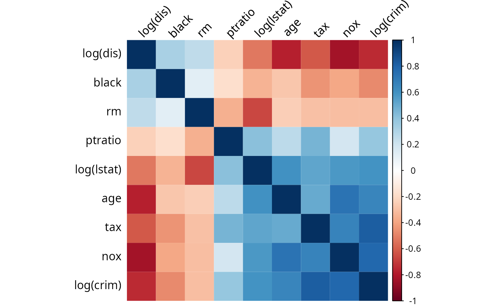

Boston Housing
boston.RmdData description and variable selection
We illustrate the effect of cellwise outlier propagation on the previously considered estimators using the Boston Housing dataset. This data is available at the UCI maching learning repository (https://archive.ics.uci.edu/ml/index.php) and was collected from \(506\) census samples on \(14\) different variables. The original objective of the study is to analyze the association between the median housing values () in Boston and the residents willingness to pay for clean air, as well as the association between and other variables in the dataset.
We only consider the \(9\) quantitative variables that were extensively studied. A sparse regression model is fitted for, \[ \log(medv) = \ \beta_0 + \beta_1 \log(lstat) + \beta_2 rm + \beta_3 \log(dis) + \beta_4 tax \\ + \beta_5 ptratio + \beta_6 nox+ \beta_7 age + \beta_8 black + \beta_9 \log(crim) + \varepsilon,\\ \] and we compare the performance of five methods: Lasso (Tibshirani, 1996), ALasso (Zou,2006), sLTS (Alfons et al., 2013), sShootingS (Bottmer et al., 2021) as well as the new proposed methods ALRPm LRP, ALGR and LGR.
To measure the performance of variable selection when adding some known redundant variables, we generate \(10\) additional random variables as redundant predictors using the same setting as in the previous simulation section. Therefore, we now have 19 predictors to choose from.
To test the performance under cellwise contamination, we standardize the 19 predictors with robust estimators of location (here we use the median) and scale (here we use \(Q_n\)). Then, for each predictor, \(10\%\) of the cells are replaced by cellwise outliers which are randomly generated from \(0.5 N(10, 1)+ 0.5N(-10, 1)\). As a comparison, we will also run simulations without any contamination {to investigate how stable the various methods are when known outliers are present in the data}. We repeat this process of adding ten redundant variables followed by generating 10% of outliers in the 19 explanatory variables 1,000 times, and then compute the selection rates of each variable
Analysis
library(MASS) # the Boston dataset
library(robcovsel)
library(doParallel)
#> Loading required package: foreach
#> Loading required package: iterators
#> Loading required package: parallel
library(tidyverse)
#> ── Attaching core tidyverse packages ──────────────────────── tidyverse 2.0.0 ──
#> ✔ dplyr 1.1.2 ✔ readr 2.1.4
#> ✔ forcats 1.0.0 ✔ stringr 1.5.0
#> ✔ ggplot2 3.4.2 ✔ tibble 3.2.1
#> ✔ lubridate 1.9.2 ✔ tidyr 1.3.0
#> ✔ purrr 1.0.2
#> ── Conflicts ────────────────────────────────────────── tidyverse_conflicts() ──
#> ✖ purrr::accumulate() masks foreach::accumulate()
#> ✖ dplyr::filter() masks stats::filter()
#> ✖ dplyr::lag() masks stats::lag()
#> ✖ dplyr::select() masks MASS::select()
#> ✖ purrr::when() masks foreach::when()
#> ℹ Use the conflicted package (<http://conflicted.r-lib.org/>) to force all conflicts to become errors
library(corrplot)
#> corrplot 0.92 loaded
data("Boston")
y = log(Boston$medv)
Boston = Boston %>% mutate(loglstat = log(lstat), logdis = log(dis), logcrim = log(crim))
predictors = Boston[, c("loglstat", "rm", "logdis", "tax", "ptratio","nox", "age", "black", "logcrim")]
corrs = cor(predictors)
rownames(corrs) = colnames(corrs) = c("log(lstat)", "rm", "log(dis)", "tax", "ptratio","nox", "age", "black", "log(crim)")
corrsplot = corrplot(corrs, method = "shade", tl.col ="black",shade.col = NA, tl.srt = 45, order = "FPC")
{
##load("result_simu_boston.RData")
data(result_simu_boston)
Boston_result = as.data.frame(as.matrix(result))
Boston_result$method = c("lasso", "alasso", "sLTS", "sShootingS", "LGR", "LRP", "ALGR", "ALRP")
#save(Boston_result, file = "Boston_result.Rdata")
Boston_result$method = factor(Boston_result$method, levels = c("ALRP", "LRP", "ALGR", "LGR", "lasso", "alasso", "sLTS", "sShootingS"))
table = aggregate(.~e + method, data = Boston_result, function(x)mean(as.logical(x)))
tbl = cbind(table[,(1:11)],redundant = rowMeans(table[,-(1:11)]));
colnames(tbl)[3:11] = c("log(lstat)", "rm", "log(dis)", "tax", "ptratio","nox", "age", "black", "log(crim)")
}
tbl[,c("method","e", rownames(corrsplot$corr), "redundant")]
#> method e log(dis) black rm ptratio log(lstat) age tax nox
#> 1 ALRP 0.0 1.00 0.00 1.00 1.00 1 0.00 0.00 1.00
#> 2 ALRP 0.1 1.00 0.00 1.00 1.00 1 0.00 0.00 1.00
#> 3 LRP 0.0 1.00 1.00 1.00 1.00 1 1.00 0.00 1.00
#> 4 LRP 0.1 1.00 0.64 1.00 1.00 1 0.28 0.00 1.00
#> 5 ALGR 0.0 1.00 0.00 1.00 1.00 1 1.00 1.00 1.00
#> 6 ALGR 0.1 1.00 0.63 1.00 0.99 1 0.54 0.04 1.00
#> 7 LGR 0.0 1.00 0.00 1.00 1.00 1 0.50 0.99 1.00
#> 8 LGR 0.1 1.00 0.91 1.00 1.00 1 0.94 0.18 1.00
#> 9 lasso 0.0 1.00 0.03 1.00 1.00 1 0.64 0.78 1.00
#> 10 lasso 0.1 1.00 0.77 0.99 1.00 1 0.80 0.51 0.91
#> 11 alasso 0.0 1.00 0.00 1.00 1.00 1 1.00 1.00 1.00
#> 12 alasso 0.1 0.99 0.55 0.98 1.00 1 0.60 0.17 0.80
#> 13 sLTS 0.0 1.00 1.00 1.00 1.00 1 0.00 0.00 1.00
#> 14 sLTS 0.1 0.67 0.44 0.96 0.84 1 0.29 0.26 0.86
#> 15 sShootingS 0.0 0.00 0.00 1.00 0.00 1 0.00 0.00 0.00
#> 16 sShootingS 0.1 0.01 0.00 0.99 0.00 1 0.00 0.00 0.00
#> log(crim) redundant
#> 1 0.76 0.08000000
#> 2 0.03 0.07909091
#> 3 0.99 0.13363636
#> 4 0.09 0.10636364
#> 5 0.00 0.05636364
#> 6 0.16 0.07272727
#> 7 0.00 0.13909091
#> 8 0.37 0.12000000
#> 9 1.00 0.12363636
#> 10 1.00 0.16727273
#> 11 1.00 0.05454545
#> 12 1.00 0.09181818
#> 13 1.00 0.01363636
#> 14 1.00 0.25090909
#> 15 0.00 0.00000000
#> 16 0.00 0.00000000
#write_csv(tbl[,c("method","e", rownames(corrsplot$corr), "redundant")], "Boston_table.csv")References
[1] Alfons, A., Croux, C., and Gelper, S. (2013). Sparse least trimmed squares regression for analyzing high-dimensional large data sets. The Annals of Applied Statistics, 7(1):226–248
[2] Bottmer, L., Croux, C., and Wilms, I. (2021). Sparse regression for large data sets with outliers. European Journal of Operational Research, In Press.
[3] Tibshirani, R. (1996). Regression shrinkage and selection via the Lasso. Journal of the Royal Statistical Society: Series B (Methodological), 58(1):267–288
[4] Zou, H. (2006). The Adaptive Lasso and Its Oracle Properties. Journal of the American Statistical Association, 101(476):1418–1429.